Complete list of blasting machines, safety PPE, accessories & abrasive recovery systems used in industrial blasting operations.
Industrial sandblasting machines (blast pots) used for cleaning steel structures with high-pressure abrasive flow. Available in 50L, 100L, 200L sizes with moisture separators, pressure regulators, and safety valves. Suitable for tanks, pipe racks, plant shutdowns & maintenance.
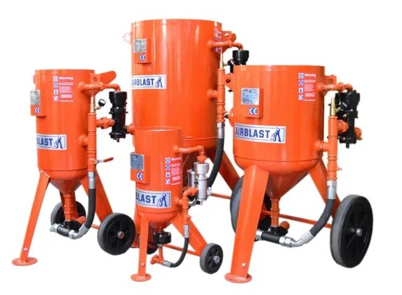Includes nozzles, nozzle holders, hose couplings, whip checks, safety pins, moisture separators, blast hoses, air hoses and quick-connect fittings. Essential to maintain pressure, safety, and proper abrasive flow.
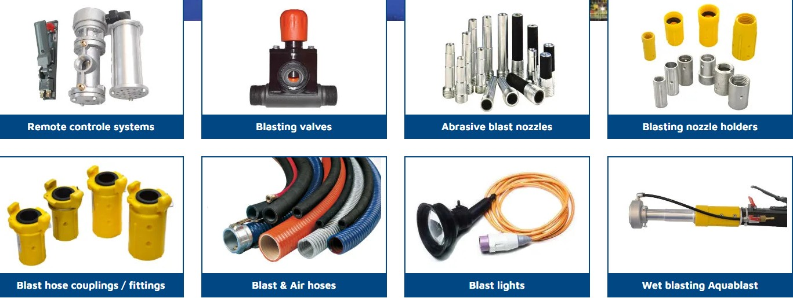Fully enclosed blasting chambers with controlled environment, dust extraction systems, abrasive recycling floors and heavy ventilation. Used for workshop blasting of beams, plates, steel structures & fabrication projects.
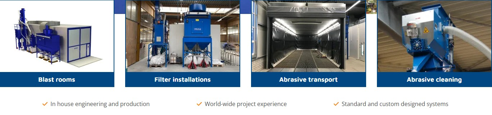Small enclosed cabinets used for blasting valves, tools, machine parts, nuts, bolts and precision components. Excellent for controlled blasting where operator inserts hands via gloves for safe operation.
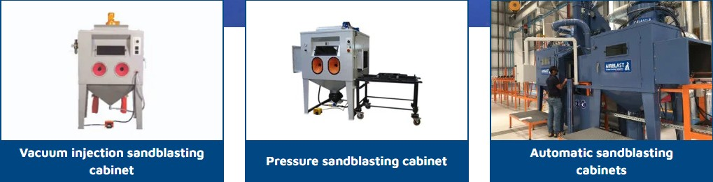Tools designed for internal & external pipe blasting including rotating pipe heads, pipe spinners and multi-diameter blast attachments. Common in pipeline maintenance, refinery shutdown & offshore projects.
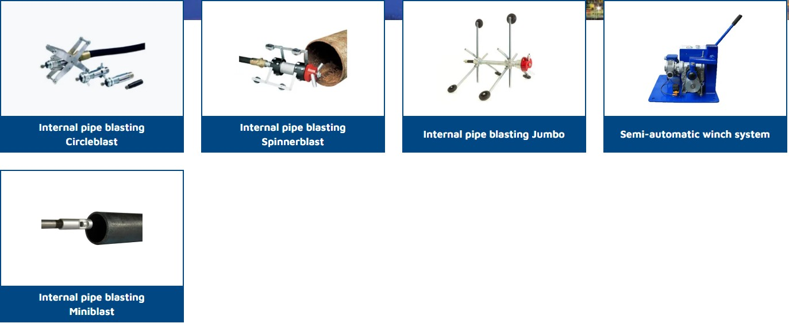Complete protection system for blasters including air-fed helmet, blast suit, leather gloves, steel toe boots, and breathing air filter. Ensures operator safety from dust, abrasive rebound and contaminants.
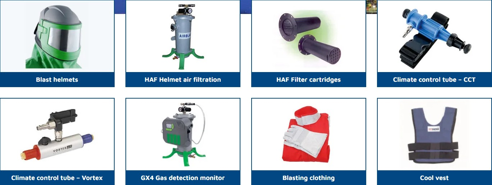Wet-blasting machines that mix water with abrasive to reduce dust up to 80%. Suitable for city work, environmental restrictions, and sensitive surroundings such as plants and refineries.
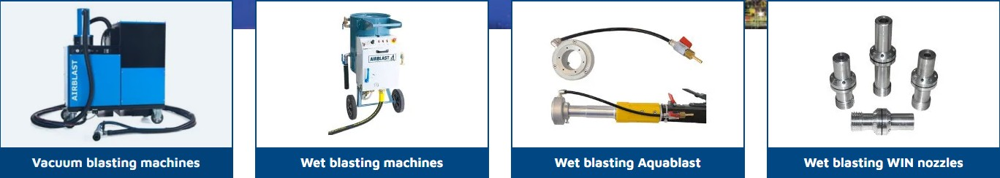High-powered industrial vacuums used to recover spent abrasives, dust and debris. Ensures clean surface and allows reusing abrasives in large projects.
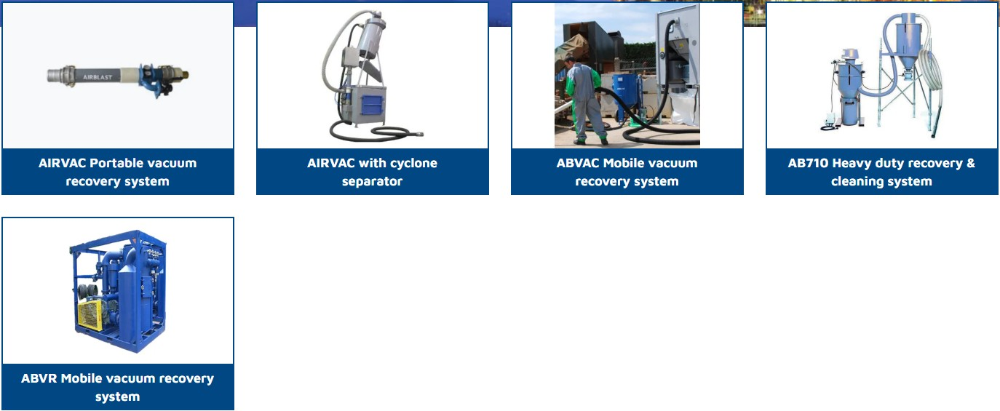Automatically recovers & cleans reusable abrasive by removing dust, rust, paint chips and contaminants. Significantly reduces abrasive consumption & improves blasting efficiency.
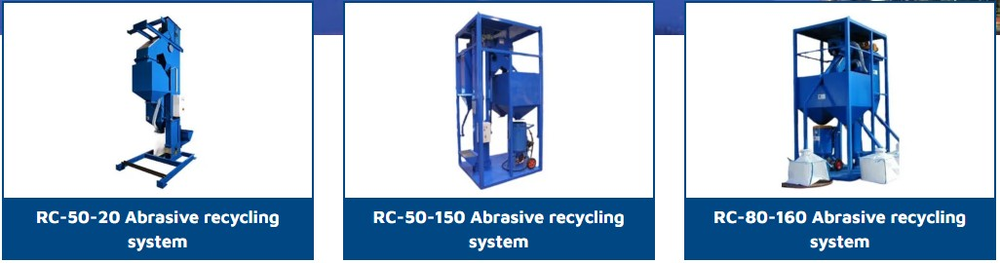Automated robotic blasting machines used for uniform blasting inside tanks, vessels and complex structures. Provides unmatched productivity, accuracy & operator safety.
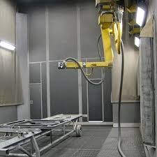Includes air dryers, moisture separators, filters and aftercoolers. Provides clean, dry and moisture-free air ensuring efficient blasting and long equipment life.
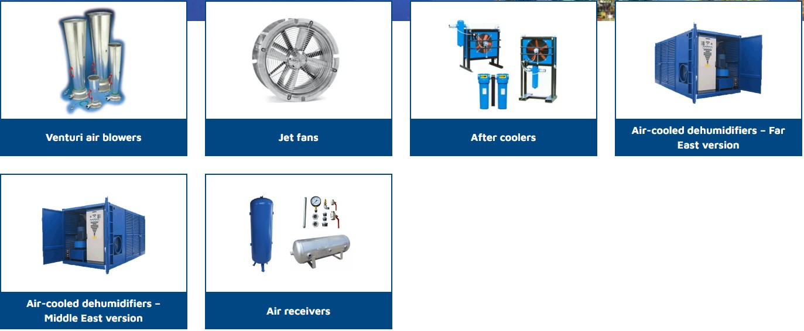Dust collectors remove airborne dust from blast rooms & job sites. Improves visibility, operator safety & environmental compliance (OSHA/ISO).
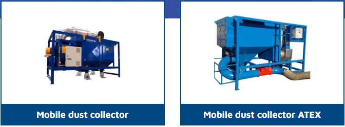Automatic shot blasting machines use high-speed rotating blast wheels to project steel shots onto the surface, achieving uniform cleaning and surface roughness. These machines are fully enclosed and ideal for plate blasting, H-beams, structural steel, fabrications, pipes, and heavy industrial components. They provide consistent profile, high productivity and minimal abrasive loss due to built-in recycling systems.
Auto shot blasting machines are widely used in fabrication workshops, shipyards, steel mills, bridge construction projects and manufacturing plants where large-volume blasting is required.